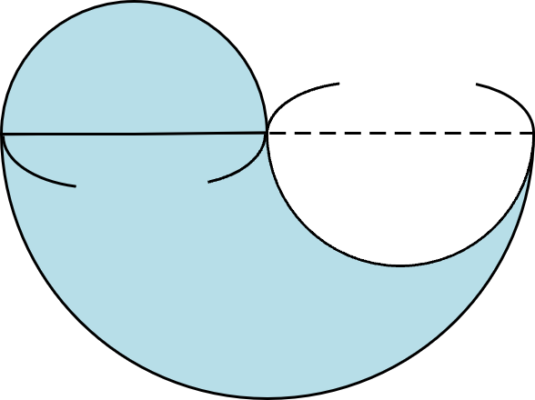
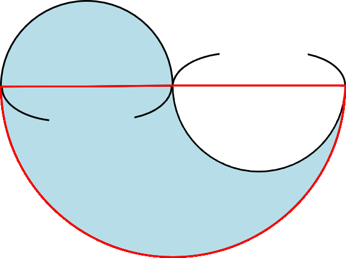
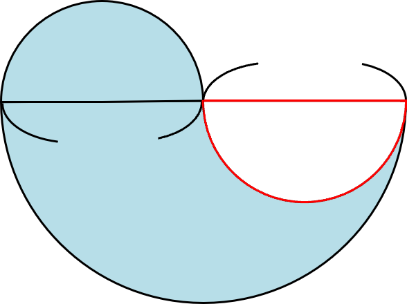
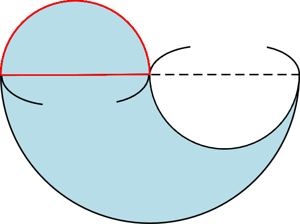
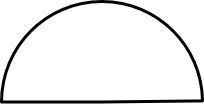

Latihan
Mana sajakah rumus luas yang harus kita gunakan saat
menghitung luas bagian yang berwarna di bawah ini?

4 cm
4 cm
−
   
Juring besar
(d ＝ 8 cm)
Juring kecil
(d ＝ 4 cm)
Juring kecil
(d ＝ 4 cm)
180°1⁄360°2 × π × r × r
180°1⁄360°2 × π × r × r
180°1⁄360°2 × π × r × r
25,12
−
6,28
＋
6,28
＝ 25,12
Jadi, luasnya adalah 25,12 cm2.
Hitunglah luas bagian yang berwarna.
cm2

6,28
25,12
6,28
＋